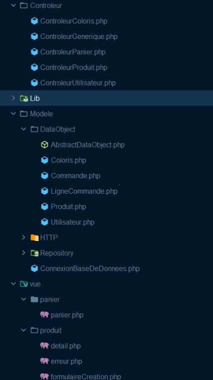

Projet site e-commerce


Projet Web : Herbazon
Dans le cadre de ma deuxième année de BUT Informatique, j’ai co-développé un site e-commerce fictif nommé Herbazon, en binôme, sur une période d’un mois. Ce projet avait pour but de simuler un site de vente de plantes et produits naturels, tout en appliquant les bonnes pratiques de développement web vues en cours.
Objectifs et Environnement Technique
Le développement du site s'est appuyé sur :
- PHP côté serveur, avec une architecture MVC pour assurer la séparation des responsabilités
- Une base de données MySQL, utilisée pour stocker et gérer dynamiquement les utilisateurs, produits, paniers et commandes
Le projet était versionné avec GitLab, ce qui nous a permis de collaborer efficacement, de suivre l’évolution du code et de pratiquer les workflows Git (branche principale, commits réguliers, intégration de fonctionnalités).
Réalisations techniques
Pendant ce projet, je me suis concentrée sur les aspects suivants :
- Gestion des produits : création des modèles, contrôleurs et vues permettant d’ajouter, afficher, modifier et supprimer des produits depuis la base de données
- Intégration dynamique des produits dans le site : affichage des catalogues, pages de détails et fiches produits avec récupération de données depuis MySQL
- Conception du design global du site : création de l’identité visuelle à l’aide de Bootstrap, choix des couleurs, typographies et mise en page
Apports pédagogiques
Ce projet m'a permis de :
- Approfondir ma maîtrise du modèle MVC dans un environnement PHP
- Développer mes compétences en intégration HTML/CSS
- Mieux comprendre l’interaction entre une interface dynamique et une base de données
- Travailler efficacement en binôme en respectant une démarche projet sous contrainte de temps

Voici la structure du projet.
Compétences mobilisées :
Compétence n°1 : Réaliser un développement d'application
Implémentation des modèles, vues et contrôleurs pour gérer dynamiquement les produits (ajout, modification, suppression, affichage).
Vérification du bon fonctionnement des fonctionnalités liées aux produits : ajout, affichage, mise à jour, suppression. En simulant un parcours utilisateur.
Compétence 4 : Gérer des données de l’information
Conception d'une base de données MySQL pour charger dynamiquement les informations produits, assurer la persistance et la cohérence des données.
Compétence 5 : Conduire un projet
Gestion du projet en binôme avec GitLab : versioning, intégration progressive des fonctionnalités.
Compétence 6 : Collaborer au sein d’une équipe informatique
Collaboration efficace : coordination du développement, communication autour des choix d’architecture et d’interface, validation commune des livrables.
Compétences utilisées
- Langages:
- HTML5
- CSS3
- Php
- Gestion de projet:
- Gitlab
Informations du projet
- Categorie Programmation Web
- Période du projet Octobre 2024 à Novembre 2024
- Voir le site